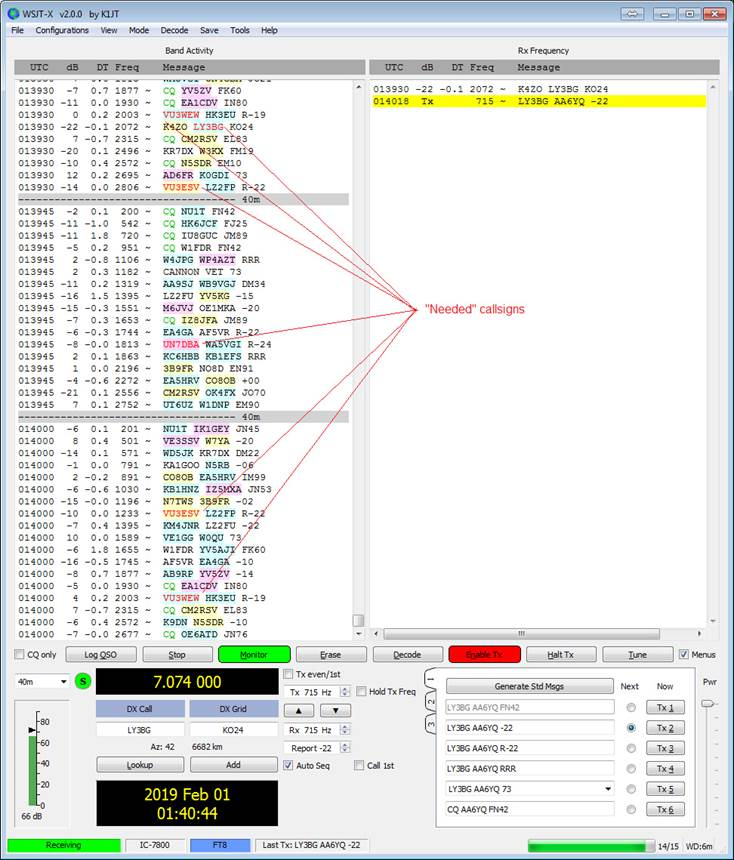

[Date Prev][Date Next][Thread Prev][Thread Next][Date Index][Thread Index]
Re: [NCDXC Chat] DXLabs and WSJT-X
When you use the direct interoperation between DXLab and WSJT-X, the callsigns in WSJT-X are color-coded as to "need" and LoTW/eQSL participation, just as they are in SpotCollector's Spot Database Display, Commander's Bandspread window, and Commander's Spectrum-Waterfall windows:
Description: http://www.dxlabsuite.com/Wiki/Graphics/SpotCollector/WSJTX.jpg
"Need" refers to all of the awards you're pursuing in all of the bands and modes you are pursuing them. There is no need to recompute after working a "needed" callsign, or after a QSO with a "needed" callsign is confirmed.
73,
Dave, AA6YQ
-----Original Message-----
From: Chat [mailto:chat-bounces@ncdxc.org] On Behalf Of Al N6TA via Chat
Sent: Tuesday, March 28, 2023 2:27 PM
To: Chat Ncdxc
Subject: [NCDXC Chat] DXLabs and WSJT-X
Now that I have figured out how to do some FT8 and have a new K4 on line, I am ready to upgrade capability by having DXKeeper do the automatic logging. I need to decide if I want JTAlert to manage my needs for DX or if I should let SpotCollector take care telling me what is on that I may need. I realize that I can try one and try the other, but would prefer to choose one method first based on some user comments.
if you have anything to offer in terms of preference, I would be glad to know them.
Thanks a lot!
Al N6TA

{kind=link}